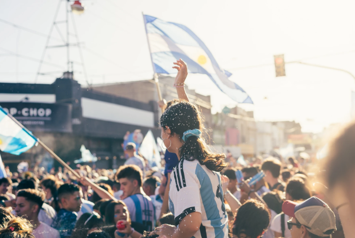

| Home | Food | Culture | Festivals | Famous Personalities | Images | Spanish Version | Contact us |

Argentina is also known for its many festivals and celebrations. In especially the northern states of Argentina, carnivals and celebrations are common. During these times people come together and enjoy the music, dance and celebrations. Attending these celebrations can teach one deeper about the Argentinian culture and traditions.In Argentina, during the many holidays, being around your loved ones is a must. Most of the holidays are common around the world but some unique ones are celebrated specifically in Argentina.
:
:
Cosquín Folk Festival Is one of the most major music festival of Argentina. This festival which lasts for nine day, was first held in 1961 and is celebrated in a city called Cosquin. It was first held by Dr. Reinaldo Wisner and Dr. Alejandro Guinder who had a simple motive of attracting tourism. The once small event soon became an annual folk event in the country and has been continued since.
Oktoberfest Festival of Beer one of the biggest
 Volksfest is held in annually in Munich, Bavaria. It was first held in 1810 when the Bavaria's Crown Prince Ludwig and Princess Therese of Saxony-Hildburghausen got married and has been continued since. During these 16 days, around 6 million people enjoy the beer and numerous attractions like carnival rides, games and the delicious food. The visitors also witness the original six breweries and people in Bavarian clothing.
Volksfest is held in annually in Munich, Bavaria. It was first held in 1810 when the Bavaria's Crown Prince Ludwig and Princess Therese of Saxony-Hildburghausen got married and has been continued since. During these 16 days, around 6 million people enjoy the beer and numerous attractions like carnival rides, games and the delicious food. The visitors also witness the original six breweries and people in Bavarian clothing.
This annual festival which is held in Mendoza city celebrates wine and the wine industry. The main events of the festival include the following:
Blessing of the fruit - People gather and thank god for the fruits they have been provided with.
Vía Blanca de las Reinas - It is a parade of chariots where each chariot carries Reinas/queens of each Mendoza province.
Reinas/queens of each Mendoza province.
Acto Central - This is the main event where more than 20000 guest wittness the six-scened choreographed show which includes 1000 dancers, fireworks and live music.